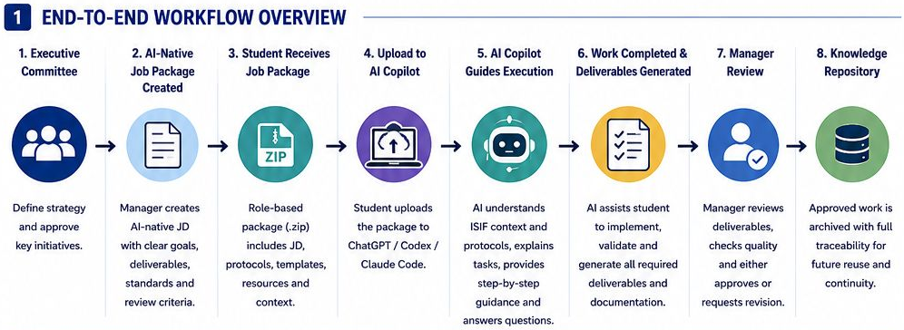
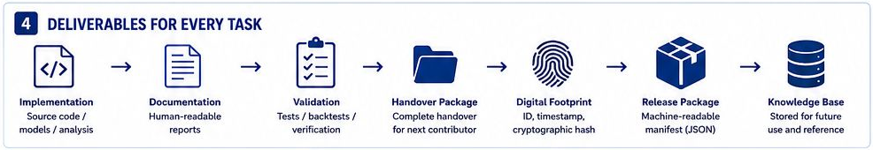

AI 辅助研究工作流程：ISIF-AIOS 设计（v1.0）
设计阶段 · 项目 · 工作流程设计 · v1.0，2025 年 5 月 · 一页设计图 · 全部项目
ISIF-AIOS（ISIF AI Operating System）是这份一页设计图的名称；它是一套工作流程，不是软件。
背景：基金的量化平台（详见简历） 自 2024 年 5 月起，我担任帝国理工学院学生投资基金执行委员会暨顾问委员会主席，参与搭建了基金的量化研究平台。这是一个基于 Python 的多资产研究与交易框架，涵盖数据、信号、回测、交易成本、组合核算、风险控制与报告。ISIF-AIOS 是我为基金成员借助 AI 助手开展工作而设计的流程。我还指导基金学生团队首次参加 QRT 量化竞赛（2026 年；四支队伍进入决赛，其中两支分获第二名和第三名）。
我设计了什么
- 从派发到归档的八步流程：执行委员会确定方向；负责人按角色下发任务包（.zip）；学生借助 AI 编程助手（ChatGPT、Codex 或 Claude Code）完成任务；负责人批准或要求修改；获批的工作归入知识库。
- 任务包由八部分组成：任务说明；规则与标准；模板与清单；指南与资料；访问与权限；数据与背景；工具与环境；AI 使用说明。设计还要求任务包经过数字签名、规则文件附带加密哈希值；审核人对照原发任务包核验时，学生或 AI 助手所作的改动就会暴露。哈希值能让改动被发现，但本身并不能阻止改动。
- 每项任务交回七项交付物，见图表 1。
- 四种角色，权限分级：执行委员会（全部）、部门负责人（本部门）、项目经理（本项目：分配与审核）、贡献者（本任务：执行与提交）。
对投研团队的价值 如今，研究团队已在借助 AI 助手写代码。真正的问题在于控制，而不在于能力：助手遵循哪些规则，规则被改动时如何发现，它可以接触哪些数据，产出如何审核，几个月后能否追溯某个结果。这套设计用打包的背景资料、附哈希值的规则文件、分级权限和人工签字回答了其中大部分问题；尚缺两条：哪些数据可以离开基金，以及 AI 助手的产出在审核之前如何检验。
设计涵盖的内容 研究中的 AI 编程助手（ChatGPT、Codex、Claude Code） 流程与治理设计 以哈希值追溯来源 按角色分级的权限 交接与知识管理
| 状态 | 内容 |
|---|---|
| 已完成 | 一页设计图 v1.0（2025 年 5 月）：流程、任务包内容、交付物、角色。 |
| 本页未展示 | 生成、签名或校验任务包的软件；基金的实际使用情况；对质量或耗时的任何实测效果。 |
阅读提示。 设计中列出的好处（质量一致、新成员上手更快等）是设计目标，不是实测结果。如果在基金中实际推行，最先要补上的是四点：（1）哪些数据可以发送给外部 AI 服务；（2）AI 助手的产出在负责人审核之前必须通过哪些自动化测试；（3）每项交付物由哪个助手、哪个模型版本、哪次会话生成的记录（v1.0 的数字足迹只记录任务编号、时间戳和哈希值）；（4）签名密钥由谁保管。助手只是辅助，决定由人来做。
图表 1：每项任务必须交回什么
| 交付物 | 内容 | 对审核的意义 |
|---|---|---|
| 实现 | 源代码、模型或分析 | 工作本身，以别人能运行的形式交付 |
| 文档 | 供人阅读的报告 | 审核人不必重跑，也能看懂做了什么 |
| 验证 | 测试、回测与核验 | 结论和对它的检验一起交来 |
| 交接包 | 下一位贡献者需要的全部材料 | 换了学生，工作也能接着做 |
| 数字足迹 | 唯一编号、时间戳和加密哈希值 | 每个结果都能对应到一项任务、一个时间和一个版本 |
| 发布包 | 发布文件，附机器可读的清单（JSON） | 审核人或脚本可以核对交付了什么 |
| 知识库条目 | 获批的工作，存档备查 | 下一个团队从这里起步，而不是从零开始 |
资料来源：ISIF-AIOS 一页设计图 v1.0（2025 年 5 月）第 4 栏“每项任务的交付物”；最后一栏是我的解读。
要点。 按这套设计，每个结果都应能追溯到产生它的代码、测试和任务包版本。
图表 2：同一条原则，两个场景
| ISIF-AIOS v1.0（设计规定） | NA-IPCA 工具包 v1.2.0（已实现并留有日志） |
|---|---|
| 以加密哈希值保护的规则文件 | 默认参数的配置冻结证书 |
| 每项任务的数字足迹 | 每次拟合的审计记录，附 SHA-256 指纹（查看一条记录示例） |
| 附 JSON 清单的发布包 | 以 SHA-256 锁定的发布版本 |
| 验证交付物 | 一致性测试与回归测试 |
| 交接与知识延续 | 189 页的手册与运行谱系（NAIPCAState） |
资料来源：ISIF-AIOS 一页设计图 v1.0 第 2–4 栏；NA-IPCA 工具包与“数据与代码”页（发布包 v1.2.0）。
要点。 两者遵循同一条规则：结果只有能追溯、能重跑才算数。类似的控制在工具包中已经实现并留有日志；在 ISIF-AIOS v1.0 中则是设计规定。
图表 3：一页设计图：流程、任务包、交付物

（在新标签页打开大图） （在新标签页打开大图）
（在新标签页打开大图）
（在新标签页打开大图）设计图共七栏，这里截取其中三栏（英文），原图由作者本人设计；角色一栏的内容已概括在上方简介中。资料来源：ISIF-AIOS 一页设计图 v1.0（2025 年 5 月）第 1、3、4 栏。
要点。 助手得到的是背景、规则和模板；决定和签字由人来做，每一步都应留下日后可以核查的记录。
延伸阅读
- 帝国理工学院学生投资基金（在新标签页打开） · 简历：服务与任职。
- 相关项目：NA-IPCA 工具包，类似的控制（冻结的默认参数、每次拟合的审计记录、锁定的发布版本）在那里已经实现并留有日志。
- 相关项目：按公司与市场状态调整的 NLP 阿尔法信号：这份计划只把智能体等 AI 工具当作研究加速手段，并要求其与任何信号一样通过按时点验证。